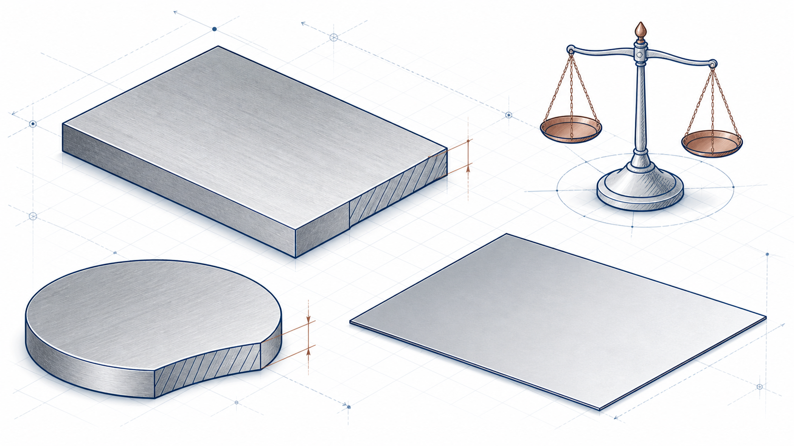

Rectangular plate
A = L × W
Length and width are converted from millimetres to metres before area is calculated.
 IndustrialCalculation HubSearch topics, tools, articles...⌕
IndustrialCalculation HubSearch topics, tools, articles...⌕Existing engineering calculator
Estimate the mass and force equivalents of rectangular, circular or irregular plates and sheets from their area, thickness and selected material density.

Select plate shape, enter the applicable dimensions and thickness in millimetres, then select the material. Results update as you enter valid values.
Select the actual material grade where known. Listed densities are typical values for preliminary estimates.
Engineering knowledge
Plate and sheet weight is determined by the volume of material and its density. Volume is the plan area multiplied by thickness. This straightforward relationship supports material estimates, fabrication planning, handling studies and early structural-load calculations—but not final design allowances or product certification.
Use a verified material grade and actual supplied thickness when the calculation affects procurement, lifting, transport, structural design or final cost.
Explore Plates and Sheets Reference Data →A = L × W
Length and width are converted from millimetres to metres before area is calculated.
A = πD² / 4
D is plate diameter, converted to metres. For irregular plates, enter known area directly.
m = A × t × ρ
m is mass, t is thickness and ρ is material density. Force is calculated from mass using the existing conversion.
A 2,000 mm × 1,000 mm carbon-steel plate with a 10 mm thickness has 2.00 m² area and 0.020 m³ volume. At the calculator's existing 7,850 kg/m³ density, it weighs approximately 157.0 kg before any holes, machining, coating or fabrication allowance is considered.
Not automatically. Use net area for an irregular shape or account for removed material separately.
Mass is reported in kilograms and related units; force is the gravitational force corresponding to that mass under the calculator's existing conversion.
For early estimates, nominal thickness may be suitable. Final material quantities and structural calculations should use the specified and verified product dimensions.
This is an original educational summary. Verify material certification and project requirements for actual work.